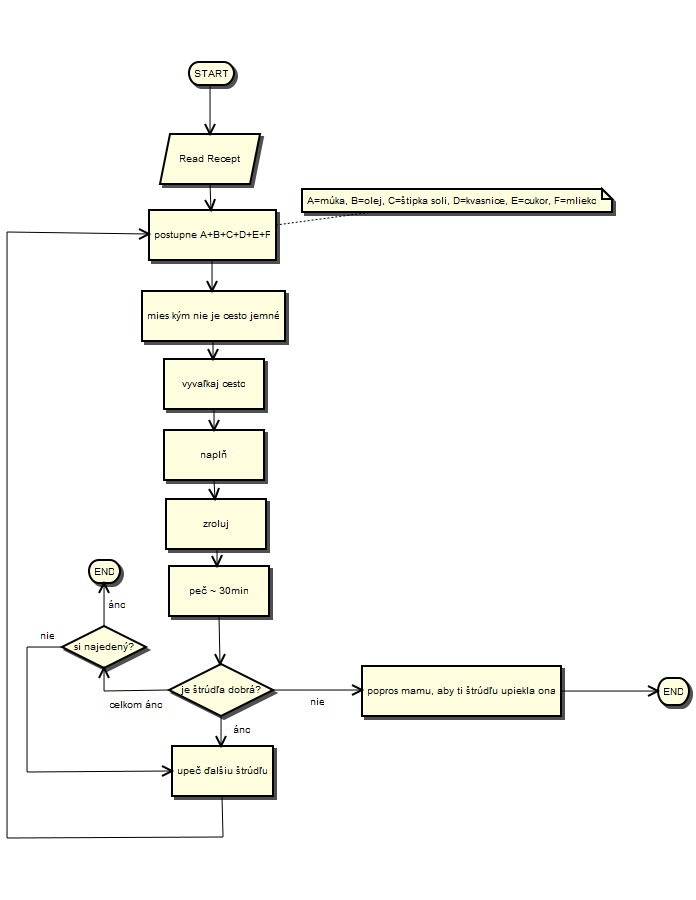

Popis vývojových diagramov (FlowChart Diagram description)
Vývojové diagramy patria k najstarším a najjednoduchším metódam popisu systému, konkrétne pre popis vykonávania algoritmov.
My, tvorcovia UML .FRI sme sa rozhodli implementovať podporu pre vývojové diagramy najmä pre to, aby ich mohli využívať neskúsení programátori pre popis svojich jednoduchých algoritmov.
Presnejší popis toho, čo je algoritmus, možno nájsť napríklad na FlowChart wiki.
Príklad FlowChart diagramu môže vyzerať napríklad takto:
